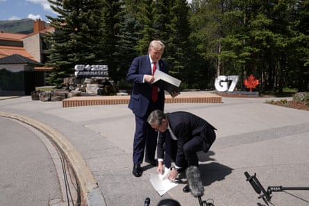

Keir Starmer and Donald Trump have signed off a UK-US trade deal at the G7 summit in Canada, with the US president saying Britain would have protection against future tariffs “because I like them”.
The two leaders presented the deal, which covers aerospace and the auto sector, at the G7 venue in Kananaskis, Alberta.
When reporters asked about steel, Trump said: “We’re going to let you have that information in a little while.”
Under details released by the Department for Business and Trade, the UK aerospace sector will face no tariffs at all from the US, while the auto industry will have 10% tariffs, down from 25%.
Starmer picked up papers after Trump dropped the trade agreement as the leaders spoke to the media.Photograph: Stefan Rousseau/Reuters
The steel industry still faces 25% tariffs for now, although this is less than the US’s global rate of 50% on steel and aluminium. The UK business department said the two leaders had pledged to “make progress towards 0% tariffs on core steel products as agreed” .
However, the US executive order implementing the deal highlighted a possible hiccup over steel tariffs. The US still wants assurances about the Chinese owners of British Steel.
In a paragraph setting out a future move to “most-favoured-nation rates for steel and aluminum articles”, the order says the UK has “committed to working to meet American requirements on the security of the supply chains of steel and aluminum products intended for export to the United States and on the nature of ownership of relevant production facilities”.
This would seem to refer to US worries about Jingye Group, which owns British Steel even though the UK government took control of the company in April to stop Jingye closing its Scunthorpe plant. Trump’s administration wants assurances that Jingye does not use British Steel as a way to circumvent US tariffs.
A full version of the deal first outlined in May had been seen as imminent , but Downing Street will be particularly happy to have it finalised at the summit, with full endorsement from a cheerful Trump – even if he did wrongly say the deal was with the EU.
“I just signed it, and it’s done. And so we have our trade agreement with the European Union, and it’s a fair deal for both, and it produces a lot of jobs, a lot of income,” Trump said.
“And we have many, many other ones coming. But you see, the level of enthusiasm is very good, but the relationship that we have is fantastic.”
As has been his habit in recent meetings with Starmer, the mercurial president was warm in his praise for a fellow leader who is not a political soulmate. “We’re very longtime partners and allies and friends, and we’ve become friends in a short period of time. He’s slightly more liberal than I am,” Trump joked at one point.
Asked if the UK was now protected from future tariffs, Trump said: “The UK is very well protected. You know why? Because I like them – that’s their ultimate protection.”
He added: “The prime minister has done a great job. I want to just tell that to the people of the United Kingdom. He’s done a very, very good job. He’s done what other people, they’ve been talking about this deal for six years, and he’s done what they haven’t been able to do. So he’s done really a very good job.”
The comments came just before the pair met for talks at the G7 event, where Starmer was poised to push the US president for new sanctions against Russia and to help end the war between Iran and Israel.
In a separate announcement late on Monday, Downing Street said it expected further sanctions on Moscow to be set out at the summit, seeking to “ratchet up pressure until Russia is ready to commit to a full and unconditional ceasefire”. No 10 said there would be more details on Tuesday.